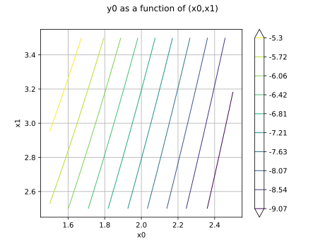

Note
Go to the end to download the full example code.
Create a symbolic function¶
In this example we are going to create a function from mathematical formulas:
![f(x_1, x_2) = -(6 + x_0^2 - x_1)]()
Analytical expressions of the gradient and hessian are automatically computed except if the function is not differentiable everywhere. In that case a finite difference method is used.
import openturns as ot
import openturns.viewer as otv
create a symbolic function
function = ot.SymbolicFunction(["x0", "x1"], ["-(6 + x0^2 - x1)"])
print(function)
[x0,x1]->[-(6 + x0^2 - x1)]
evaluate function
x = [2.0, 3.0]
print("x=", x, "f(x)=", function(x))
x= [2.0, 3.0] f(x)= [-7]
show gradient
print(function.getGradient())
| d(y0) / d(x0) = -2*x0
| d(y0) / d(x1) = 1
use gradient
print("x=", x, "df(x)=", function.gradient(x))
x= [2.0, 3.0] df(x)= [[ -4 ]
[ 1 ]]
draw isocontours of f around [2,3]
graph = function.draw(0, 1, 0, [2.0, 3.0], [1.5, 2.5], [2.5, 3.5])
view = otv.View(graph)

Display all graphs
otv.View.ShowAll()